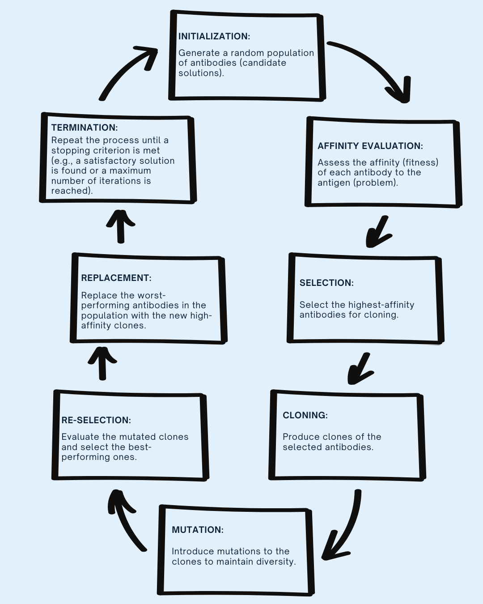
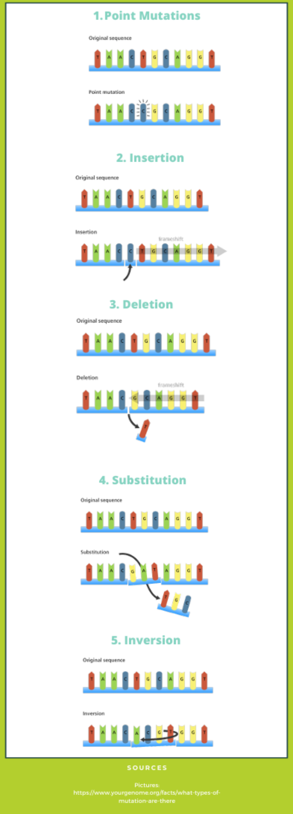

Clonal Selection Theory
The Clonal Selection Algorithm (CSA) is a computational model based on the
clonal selection theory of acquired immunity. This theory explains how B and
T lymphocytes improve their response to antigens over time through processes
like affinity maturation. In computational terms, this theory inspires algorithms
that identify high-quality solutions and refine them iteratively to adapt to new
challenges.
(Source: Wikipedia contributors, 2023)
How CSA Adapts and Learns
- Selection: Identifying candidate solutions (antibodies) with high affinity to the problem (antigen).
- Cloning: Replicating these high-affinity solutions.
- Mutation: Introducing variations to the clones to explore new solutions.
- Replacement: Substituting low-affinity solutions with improved ones.
This cyclical process allows the system to adapt and optimize solutions over time, similar to how the immune system evolves to combat pathogens.
(Source: Wikipedia contributors, 2023)
Infographic 1: Clonal Selection Algorithm Process

This infographic illustrates biological mutation types—point mutations, insertions, deletions, substitutions, and inversions—which introduce genetic diversity within populations. Similarly, the CSA uses mutation and selection to introduce variety and refine high-performing clones, mimicking how the immune system adapts and improves its antibody responses over time.
Mutation and Selection
Mutation and selection are critical for ensuring diversity and refining potential solutions in CSA.
- Mutation: Slight modifications in cloned solutions introduce variety, preventing stagnation and helping the algorithm explore a wider range of possibilities.
- Selection: After mutation, the system selects the highest-performing clones, ensuring only the most effective solutions continue to the next iteration.
This iterative adaptation mimics how the immune system fine-tunes its antibodies to better recognize and neutralize pathogens.
(Source: Wikipedia contributors, 2023)
Comparison to Other Bio-Inspired Algorithms
While CSA shares similarities with other bio-inspired algorithms like Genetic Algorithms (GA) and Ant Colony Optimization (ACO), it has unique features:
- Unlike GA, CSA’s cloning and mutation are more directly modeled after the immune system’s biological processes.
- Unlike ACO, which relies on pheromone trails and collective intelligence, CSA uses an individual learning mechanism inspired by lymphocyte affinity maturation.
These differences make CSA particularly suited for tasks that require robust anomaly detection and adaptive optimization, such as network security or data clustering.
(Source: algorithmafternoon.com; DataCamp, 2023)
Infographic 2: Innate vs. Adaptive Immunity

The division between innate and adaptive immunity mirrors how AIS algorithms balance fast initial responses (like innate immunity) with ongoing learning and adaptation (like adaptive immunity) to improve performance over time.